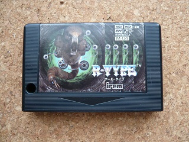
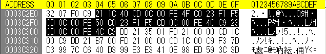
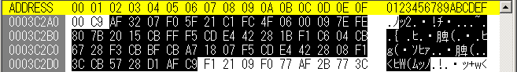

R-TYPEのバグ
MSX版のR-TYPEは色んなことで有名ですが・・・一番有名なのは、MSX MUSICが鳴らないことがあるというバグでしょうか。

スロット2にFM-PACを挿入したときだけ検出するのは事実のようです。
早速、ROMファイルを吸い出してダンプしてみました。4018hからの"APRLOPLL"(内蔵FMの場合)または"PAC2OPLL"(FM-PACの場合)をチェックするはずなので、"18 40"で検索をかけてもそれらしいものは出てきません。では401Chからの"OPLL"(内蔵FM、FM-PAC共通)をチェックしているのかと、"1C 40"で検索をかけると、3C2E5hがあやしそうです。（3C2E5hと全く同じ内容が5C2E5hと7C2E5hにもありますが、ここでは3C2E5hに的を絞ります。）

R-TYPEは16kバンクらしいので、3Cxxxhということはバンク0Fhのようです。実際に動作しているときのアドレスは42E5hか82E5hになります。3C2E3hにC9があるので、3C2E4hから始まるルーチンだと考えられます。3C2E4hから34バイトほど命令語にすると下記の通りです。
LD HL, 401Ch
CALL 000Ch :インタースロットコール（Aレジスタで指定するスロットのアドレスHL(401Ch)を読む）
CP 4Fh :'O'かチェック
RET NZ :'O'でなければ戻る, Zフラグ=0
INC HL :次のアドレス
POP AF :検索するスロットをAレジスタに呼び出す?
PUSH AF :検索するスロットを保存?
CALL 000Ch
CP 50h :'P'かチェック
RET NZ :'P'でなければ戻る, Zフラグ=0
INC HL
POP AF
PUSH AF
CALL 000Ch
CP 4Ch :'L'かチェック
RET :'L'ならZフラグ=1, 'L'で無ければZフラグ=0
INC HL
CALL 000Ch
CP 4Ch :'L'かチェック
RET
ここだけみてバグの原因が分かる人にはだいたい分かると思いますが、私は気づけなかったので、種明かしは後にします。ここでは"OPLL"かどうかをチェックするはずが、一個目の'L'をチェックした後に無条件で帰っているので実際には"OPL"かどうかをチェックしています。
RETで帰っているということは、どこかから3C2E4hに飛んできているはずです。実際には42E4hか82E4hになっているはずですので、"E4 42"と"E4 82"で検索をかけると、"E4 82"は見つからないので42E4hのようです。3C2B7h(42B7h)と3C2CAh(42CAh)に"CD E4 42"がありました。（"1C 40"の時と同じように5Cxxxh, 7Cxxxhにも見つかりますが、やはり同じなので省略します。）

3C2A1h(42A1h)にC9hがあるので、3C2A2h(42A2h)から始まるルーチンのようです。42E4hをCALLするまでの部分を命令語にすると下記の通りです。
42A2h XOR A :A=00h
42A3h LD (F007h), A
42A6h LD E, A
42A7h LD HL, FCC1h
42AAh LD C, A :確認する基本スロットの番号
42ABh LD B, 00h
42ADh ADD HL, BC
42AEh LD A, (HL) :拡張スロットの有無をチェック
42AFh CP 80h
42B1h LD A, E
42B2h JR NZ, 15h :拡張スロットが無い場合は次の命令の15h番地後の命令に
42B4h SET 7, A :拡張スロットがある場合はbit7を1にする
42B6h PUSH AF :Aレジスタにできあがった検索対象のスロットをPUSHで保存
42B7h CALL 42E4h :実際の検索ルーチンに飛ぶ
細かい説明は省きますが、検索対象のスロット番号をAレジスタに設定し、PUSHで保存して、CALLしているようです。意図としては、42E4hからの検索ルーチンで一文字検索する毎にPOPでAレジスタに設定し直し、PUSHで再度保存したかったのだと思います。
鋭い人はとっくにお気づきだと思いますが、ここで問題となるのはCALLを使っていることです。CALLは次の命令アドレスをスタックに積んでからCALL先に飛びます。つまり、せっかくPUSHでAレジスタの値を保存したのに、その上にCALLの次の命令のアドレス42B9hが入ることになります。従って、42E4hからのルーチンでPOP AFをやってもAレジスタには42hが入ってしまいます。42CAhでも同様に42E4hを呼び出していますが、このときも次の命令アドレスは42CDhなのでPOP AFではAレジスタには42hが入ります。
つまり、401Chの'O'のチェックはきちんと目的のスロットで行われるのですが、401Dhの'P'以降は42hで指定されるスロットを常に検索していることになります。42hを二進数で書くと 0100 0010Bです。最上位ビットが0なので基本スロットを示します。次の3ビット(100)は無視されます。最後の4ビットは拡張スロット番号と基本スロット番号で、基本スロット2か拡張スロット2-0を示しますが、最上位ビットが0なので基本スロット2になります。
意図としては全スロットを検索するつもりだったのですが、スタックの使い方を誤ったために結果的にスロット2でしか検出できなくなっているようです。まぁ、'OPL'しか検出しておらず、内蔵FM音源は無効に出来ないのでスロット2のFM-PACが有効になるとFM音源が二重に鳴ってしまいます。FM-PACを有効にするには当該スロットの7FF6hの値を読み出し、bit0を1にして、7FF6hに書く必要があります。しかし、"F6 7Fh"で検索しても見つかりません。つまり、FM-PACの有効化はされていないようです。A1FXのスロット2にFM-PACを挿してもFM音源は鳴りませんでした。スロット2に内蔵FM音源またはFM-PACがあるときに、内蔵FM音源があれば鳴るようです。
ちなみに、にがさんのNGLOAD.COMを使うと不具合ルーチンを修正して似非RAMインストールしてくれます。ただし、バンクレジスタの初期値が特殊なので/Rオプションでソフトリセットする必要があります。
この噂の元ネタを下さったにがさんに感謝します！